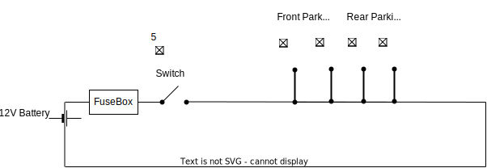

A vehicle has lighting to illuminate the road and surroundings ahead to increase visibility for driver to see presence of obstacles, pedestrians, path of travel. Additionally, vehicle has lights to signal, warn, alert drivers of other vehicles and pedestrians of direction of the vehicle, seek priority of movement from other vehicles and other indications such as stop. Lighting system is very important in a vehicle from the perspective of safety of occupants of vehicle and road users and infrastructure. A vehicle has lights placed outside the vehicle (external lights) and lights inside vehicle (internal lights). This document provides details of all the lights of a vehicle and details of how each of these lights are controlled.
| Term | Description |
|---|---|
| EMI | Electro Magnetic Interference |
| DRL | Daylight Running Light |
| CHMSL | Center High Mount Stop Lamp |
| LD | Lane Departure |
| AFS | Adaptive Frontlight System |
Following are the requirements of lights in an automobile
|
|---|
| External Lights in a Vehicle |
These lamps/lights are also called side lights. These lights are used to increase visibility of the vehicle when it is parked.
These lights are triggered using a switch shown as (5) in the diagram.
Parking lamps are connected through simple physical electrical wiring and a switch. This is shown in the diagram below.
|  |
|---|
| Parking Lights Wiring |
sequenceDiagram
autonumber
actor Driver
participant Switch
participant FrontPositionLamps
Driver->>Switch: Turns on
Switch->>FrontPositionLamps: Signal to turn on
Side mirror and Fender lamps are triggered by the following
Hardware: Turn signal lever is activated to indicate direction - left or Right Software Triggered: When lane departure is detected on the left side or right side
These lamps are deactivated when turn signal lever is brought to normal position or lane transition completion is detected
High beam lamps are of low intensity and illuminate a shorter distance in front of the vehicle. Low beam lamps are of high intensity and illuminate greater distance.
Switching between high and low beam is by manual trigger by the driver.
sequenceDiagram
autonumber
actor Driver
participant SwitchTrigger
participant HighBeamLamps
participant LowBeamLamps
Driver->>SwitchTrigger: ToggleTrigger
SwitchTrigger-->>HighBeamLamps: Trigger
HighBeamLamps->>LowBeamLamps: Change
sequenceDiagram
autonumber
actor Driver
participant SwitchTrigger
participant LowBeamLamps
participant HighBeamLamps
Driver->>SwitchTrigger: ToggleTrigger
SwitchTrigger-->>LowBeamLamps: Trigger
LowBeamLamps->>HighBeamLamps: Change
sequenceDiagram
autonumber
actor Driver
participant SteeringWheel
participant WheelModule
participant FrontLightModule
participant FrontLightMotor
Driver->>SteeringWheel: Turns
SteeringWheel-->>FrontLightModule: Angle Of Rotation (over CAN)
WheelModule-->>FrontLightModule: Angle Of Rotation (over CAN)
FrontLightModule->>FrontLightMotor: Start rotating Lamp (Angle)
| Product Name | Vendor/Open Source | Purpose | Description |
|---|---|---|---|
| Lucidshape | Synopsis | Simulate and Evaluate automotive headlamps | Night driving simulation software Based on CATIA CAD tool |
mindmap
root((AutomotiveLights))
Lamp manufacturers
OSRAM[OSRAM]
Hella[Hella]
Software
Simulation Software vendors
Synopsys[Synopsys]
OpenSource[OpenSource]
Freeware[Freeware]
IC vendors
xyz
x
y
z
abc
a
b
c
XYZ
x1
y1
ABC
a1
b1
c1